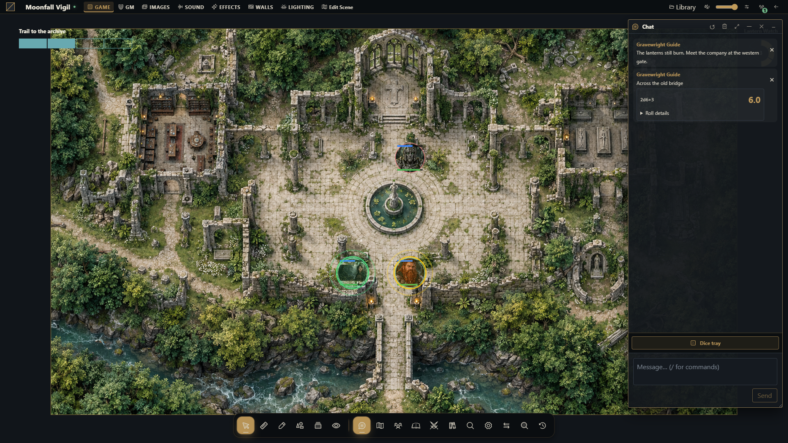

Chat and dice notation
Send table messages and learn a useful set of native dice expressions.


Send the right message
Open chat, check its scene/audience context and send a short test message. Select private or GM delivery only through the supported audience controls, and verify the recipient before sending secrets. A roll result is stored with its message; another user's refresh should not create another roll.
Roll an expression
Use the dice interface to submit an expression. The native notation uses a lowercase d, positive integer counts and faces, arithmetic and parentheses.
| Expression | Meaning |
|---|---|
| 1d20 + 3 | Roll a d20 and add three |
| 2d6 + 1 | Sum two d6 and add one |
| 4d6kh3 | Keep the highest three of four d6 |
| 2d20kl1 | Keep the lower of two d20 |
| 1d6! | Explode recursively on the maximum face |
| 1d6r1 | Reroll a one once |
| 4dF | Four Fudge dice |
| 8d10 >= 8 | Count successful active dice at least eight |
Modifiers attach directly to their dice term: 4d6kh3 works; separating kh3 with a space does not. Recursive rerolls/explosions are bounded by the engine; an expression can be rejected for complexity.
Watch comparison spacing
1d6!=5 means exploding on a five. 1d6 != 5 is an expression comparison. 2d6!>=5 is conditional explosion; 2d6! >= 5 explodes normally then counts successes. Use spaces deliberately when mixing modifiers and comparisons.
Supported numeric functions include floor, ceil, round, abs, min, max and clamp in lowercase. Unknown functions and chained comparisons are rejected.
Respond to an object's roll request
A GM can configure a Dice challenge or Request dice roll action in a Smart Object. An authorized recipient receives a native prompt with its expression and label. Review it and press Roll explicitly; receiving the prompt does not roll automatically. The server validates the expression and posts the result to the configured public or GM audience through the normal dice service.
Retries and multiple tabs reuse the same logical roll for that recipient. Streamers do not receive actionable requests. The object graph continues after requesting the roll; it does not wait for the result or apply RPG-specific success, damage or rewards. Those rules belong to the chosen system package.
Troubleshoot
If a roll fails, simplify to 1d20, then add one modifier at a time. Check lowercase notation and modifier spacing. After a lost connection, inspect chat for the committed result before submitting a new roll. A new submission is a new logical roll, even if its expression is identical. Installed systems may add their own roll controls without changing the meaning of every native expression.